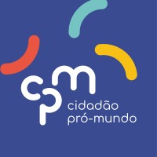

Quem somos
A Cidadão Pró-Mundo promove oportunidades de inserção e integração social aos jovens de escola pública no Brasil, por meio do ensino de inglês gratuito.
Missão da ONG CPM
Promover a inserção social de adolescentes e jovens de escolas públicas do Brasil, por meio do ensino voluntário de inglês
Contato com a CPM
Endereço: Rua bela vista 123
Telefone: (11) 98321-3123
Email: cidadaopromundo@gmail.com